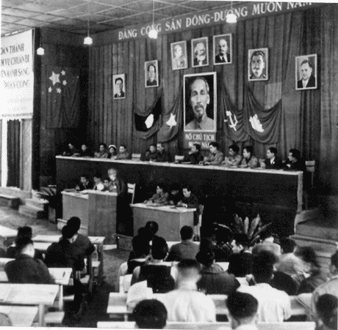
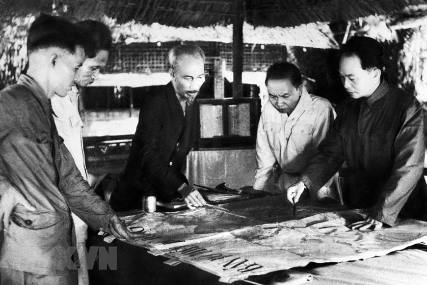
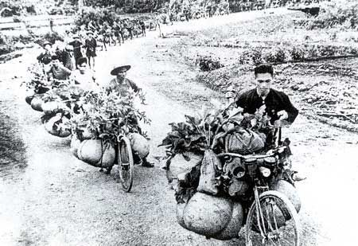

← Quay lại
Kháng Chiến Chống Thực Dân Pháp (1945–1954)
Bài giảng chính
Video giảng bài chi tiết — Bài 7
Bài giảng điện tử
PowerPoint — Bài 7
💡 Dùng phím ← → để chuyển slide. Nhấn nút toàn màn hình để xem đầy đủ.
Tổng kết kiến thức
Sơ đồ tư duy — Bài 7
Sơ đồ tư duy — Bài 7
Sơ đồ tư duy tổng kết toàn bộ kiến thức Kháng chiến chống Pháp 1945–1954.
Nhấn nút bên dưới để mở và tương tác đầy đủ.
Mở trong tab mới · Miễn phí · Không cần đăng nhập
💡 Vào MindMeister để kéo di chuyển, phóng to/thu nhỏ và xem chi tiết từng nhánh.
Tư liệu lịch sử
Tư liệu & Kho ảnh lịch sử
🎤 Podcast kể chuyện lịch sử
Spotify Podcast
Kháng chiến chống Pháp — Tập 1
Tường thuật lại những ngày đầu kháng chiến toàn quốc 19/12/1946 và hành trình gian khổ bảo vệ nền độc lập.
Spotify Podcast
Chiến thắng Điện Biên Phủ — Tập 2
56 ngày đêm lịch sử tại lòng chảo Điện Biên Phủ — quyết định vận mệnh đất nước và buộc Pháp ký Hiệp định Giơ-ne-vơ.
📱 Clip ngắn — Nguồn @kenhlichsudenho
TikTok
Kháng chiến chống Pháp (P1)
TikTok
Kháng chiến chống Pháp (P2)
TikTok
Kháng chiến chống Pháp (P3)
TikTok
Kháng chiến chống Pháp (P4)
TikTok
Kháng chiến chống Pháp (P5)
TikTok
Kháng chiến chống Pháp (P6)
🎞 Video tư liệu lịch sử
Tư liệu
Video tư liệu Bài 7 (1)
Tư liệu
Video tư liệu Bài 7 (2)
📷 Ảnh tư liệu lịch sử

Nhân dân Nam Bộ mít tinh biểu thị quyết tâm kháng chiến chống thực dân Pháp xâm lược (1945)

Đại hội đại biểu lần thứ II của Đảng Cộng sản Đông Dương ở Chiêm Hoá (Tuyên Quang).

Chủ tịch Hồ Chí Minh và Bộ Chính trị Trung ương Đảng quyết định chủ trương tác chiến Đông – Xuân 1953 – 1954.

Dân công dùng xe đạp thồ phục vụ chiến dịch Điện Biên Phủ.
Ôn thi nhanh
Cẩm nang từ khóa vàng — Bài 7
| Giai đoạn / Sự kiện | Từ khóa | ⚠️ Lưu ý & Ý nghĩa |
|---|---|---|
| Bối cảnh sau CMT8 (1945) | "Ngàn cân treo sợi tóc" | 3 loại giặc: Giặc đói, giặc dốt và giặc ngoại xâm (nguy hiểm nhất). |
| 23/09/1945 | Pháp mở đầu xâm lược lần thứ hai | Pháp đánh úp trụ sở UBND Nam Bộ tại Sài Gòn. Chỉ là khởi đầu xâm lược ở miền Nam, chưa phải toàn quốc. |
| 19/12/1946 | Kháng chiến toàn quốc bùng nổ | Hồ Chí Minh ra "Lời kêu gọi toàn quốc kháng chiến". Mốc lan rộng ra cả nước. |
| Đường lối kháng chiến | Toàn dân, toàn diện, trường kỳ, tự lực cánh sinh | 4 trụ cột cốt lõi. "Tự lực cánh sinh" quan trọng nhất — không bị phụ thuộc bên ngoài. |
| Chiến dịch Việt Bắc 1947 | "Phá tan âm mưu đánh nhanh thắng nhanh" | Pháp buộc chuyển sang "đánh lâu dài". Ta bảo vệ cơ quan đầu não kháng chiến. |
| Chiến dịch Biên giới 1950 | "Giành quyền chủ động chiến trường chính" | Khai thông biên giới Việt–Trung. Ta chuyển từ thế phòng ngự sang thế tiến công. |
| Đại hội II (1951) | "Đảng Lao động Việt Nam" | Đảng ra hoạt động công khai. Được gọi là "Đại hội kháng chiến thắng lợi". |
| Kế hoạch Na-va (1953) | "Kết thúc chiến tranh trong danh dự" | Hy vọng cuối cùng của Pháp. Mỹ viện trợ tài chính và quân sự tối đa. |
| Chiến dịch Điện Biên Phủ (1954) | "Phá sản hoàn toàn kế hoạch Na-va" | Thắng lợi quân sự lớn nhất, quyết định buộc Pháp ký Hiệp định Giơ-ne-vơ. |
| Hiệp định Giơ-ne-vơ (1954) | "Kết thúc ách thống trị của Pháp" | Văn bản pháp lý quốc tế đầu tiên ghi nhận độc lập, chủ quyền, thống nhất và toàn vẹn lãnh thổ Việt Nam. |
Công nghệ cao · Phần đinh của web
Trải nghiệm VR / 3D — Di tích Điện Biên Phủ
Chọn không gian bạn muốn khám phá:
7 trải nghiệm thực tế ảo tại các di tích lịch sử Điện Biên Phủ — nhấn để tải.
📱 Quét QR
Sở chỉ huy chiến dịch
Nơi Đại tướng Võ Nguyên Giáp chỉ huy toàn bộ chiến dịch Điện Biên Phủ lịch sử
▶ Tham quan
📡 Kéo chuột để nhìn xung quanh
📱 Quét QR
Bức tranh Panorama
Bức tranh panorama khổng lồ tái hiện toàn cảnh chiến dịch Điện Biên Phủ lịch sử
▶ Tham quan
📡 Kéo chuột để khám phá
📱 Quét QR
Đồi D — Điện Biên Phủ
Khám phá đồi D — một trong các cứ điểm quan trọng trong chiến dịch lịch sử
▶ Tham quan
📡 Kéo chuột để nhìn xung quanh
📱 Quét QR
Đồi A — Điện Biên Phủ
Tham quan đồi A — trung tâm phòng ngự của thực dân Pháp tại lòng chảo Điện Biên
▶ Tham quan
📡 Kéo chuột để nhìn xung quanh
📱 Quét QR
Bảo tàng Chiến thắng (1)
Bảo tàng Chiến thắng Điện Biên Phủ — không gian lưu giữ ký ức hào hùng của dân tộc
▶ Tham quan
📡 Kéo chuột để khám phá
📱 Quét QR
Bảo tàng Chiến thắng (2)
Tham quan bảo tàng chính với các hiện vật và tư liệu quý về chiến dịch lịch sử
▶ Tham quan
📡 Kéo chuột để khám phá
📱 Quét QR
Hầm chỉ huy De Castries
Khám phá hầm chỉ huy nguyên bản — nơi tướng De Castries đầu hàng ngày 7/5/1954
▶ Tham quan
📡 Kéo chuột để nhìn xung quanh
Pháp mở đầu xâm lược VN lần 2 ở đâu, khi nào?
Sài Gòn, đêm 22 rạng sáng 23/9/1945
Văn kiện bùng nổ kháng chiến toàn quốc 19/12/1946?
Lời kêu gọi toàn quốc kháng chiến (Hồ Chí Minh)
4 trụ cột của đường lối kháng chiến chống Pháp?
Toàn dân, toàn diện, trường kỳ, tự lực cánh sinh
Ý nghĩa lớn nhất của chiến dịch Việt Bắc 1947?
Phá tan "đánh nhanh thắng nhanh", bảo vệ đầu não
Sau 1947, Pháp buộc phải chuyển sang chiến thuật gì?
Đánh lâu dài (Nuôi chiến tranh bằng chiến tranh)
Mục tiêu số 1 của chiến dịch Biên giới 1950?
Khai thông biên giới Việt–Trung để nhận viện trợ
Bước ngoặt của chiến dịch Biên giới 1950 là gì?
Ta giành quyền chủ động trên chiến trường chính
Tên gọi của Đảng từ sau Đại hội II (1951)?
Đảng Lao động Việt Nam
Đại hội II (1951) có ý nghĩa gì đối với Đảng?
Đảng ra hoạt động công khai
Mục tiêu cốt lõi của kế hoạch Na-va (1953)?
Xoay chuyển cục diện, "kết thúc chiến tranh trong danh dự"
Mâu thuẫn "chí tử" trong kế hoạch Na-va là gì?
Tập trung lực lượng và Phân tán lực lượng
Phương châm Đông Xuân 1953–1954 của ta là gì?
Đánh vào hướng quan trọng mà địch tương đối yếu
Quyết định lịch sử của Võ Nguyên Giáp tại Điện Biên Phủ?
Chuyển "Đánh nhanh thắng nhanh" sang "Đánh chắc tiến chắc"
Chiến dịch Điện Biên Phủ diễn ra trong bao lâu?
56 ngày đêm (13/3/1954 – 7/5/1954)
Ý nghĩa quân sự lớn nhất của chiến thắng Điện Biên Phủ?
Phá sản hoàn toàn kế hoạch Na-va của Pháp–Mỹ
Ngày ký kết Hiệp định Giơ-ne-vơ về Đông Dương?
21/07/1954
Văn bản pháp lý quốc tế đầu tiên công nhận độc lập Việt Nam?
Hiệp định Giơ-ne-vơ 1954
Nhân tố quyết định nhất thắng lợi chống Pháp?
Sự lãnh đạo đúng đắn của Đảng và Hồ Chí Minh
Kết quả quan trọng nhất đối với miền Bắc sau 1954?
Hoàn toàn giải phóng, tiến lên Chủ nghĩa xã hội
Chiến thắng Điện Biên Phủ cổ vũ phong trào gì trên thế giới?
Giải phóng dân tộc ở các nước thuộc địa (Á, Phi, Mỹ Latinh)
Học sâu · Trải nghiệm
Dự án & Hoạt động trải nghiệm
Podcast Lịch sử
Thu âm một tập podcast kể lại 56 ngày đêm Điện Biên Phủ qua lời nhân chứng tưởng tượng.
Cá nhân / NhómTập làm phóng viên
Viết bài báo tường thuật sự kiện 7/5/1954 như một phóng viên tại chỗ tại Điện Biên Phủ.
Cá nhânNhật ký lịch sử
Viết nhật ký từ góc nhìn của một chiến sĩ trong 56 ngày đêm chiến đấu tại Điện Biên Phủ.
Cá nhânTemplate Poster — Tự tóm tắt bài theo cách riêng
Tải template poster Bài 7, điền thông tin và trang trí theo phong cách của bạn. Một cách sáng tạo để ghi nhớ kiến thức!
🖼
In ra hoặc dùng trực tiếp trên máy tính — điền vào các ô kiến thức quan trọng của Bài 7.
↓ Tải poster về
{kind=link}